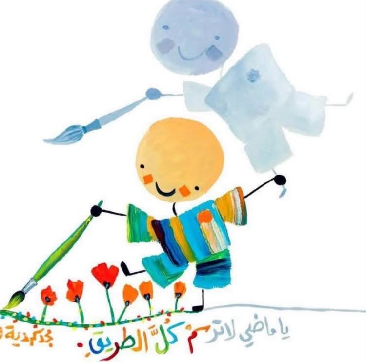

النبذة التعريفية والأكاديمية
طالبة بكلية هندسة الحاسب في جامعة طنطا. أمتلك شغفاً عميقاً بالتقاطع المذهل بين البرمجيات والعتاد المادي (Hardware & Software Integration)، وتطوير الأنظمة المدمجة وإنترنت الأشياء (IoT)، إضافة إلى حماية الشبكات والأنظمة عبر الأمن السيبراني (Cyber Security). أجمع بين الدقة الهندسية الصارمة وحل المشكلات وأيضا أمتلك الحس الفني البصري والأدبي.
شغف الفن والأدب الأصيل
روائع العرب"عَلَى قَدْرِ أَهْلِ الْعَزْمِ تَأْتِي الْعَزَائِمُ ... وَتَأْتِي عَلَى قَدْرِ الْكِرَامِ الْمَكَارِمُ"
في العزم وعلو الهمة"أَتَاكَ الرَّبِيعُ الطَّلْقُ يَخْتَالُ ضَاحِكاً ... مِنَ الْحُسْنِ حَتَّى كَادَ أَنْ يَتَكَلَّمَا"
في وصف الطبيعة والجمال"وَمَنْ يَجْعَلِ المَعْرُوفَ فِي غَيْرِ أَهْلِهِ ... يَكُنْ حَمْدُهُ ذَمّاً عَلَيْهِ وَيَنْدَمِ"
في الحكمة ووضع الأمور في نصابهاالمعرض المرئي والفني المتقدم
اختر التصنيف لاستكشاف الأرشيف المرئي بدقة وسلاسة فائقة (اضغط مرتين للإغلاق)